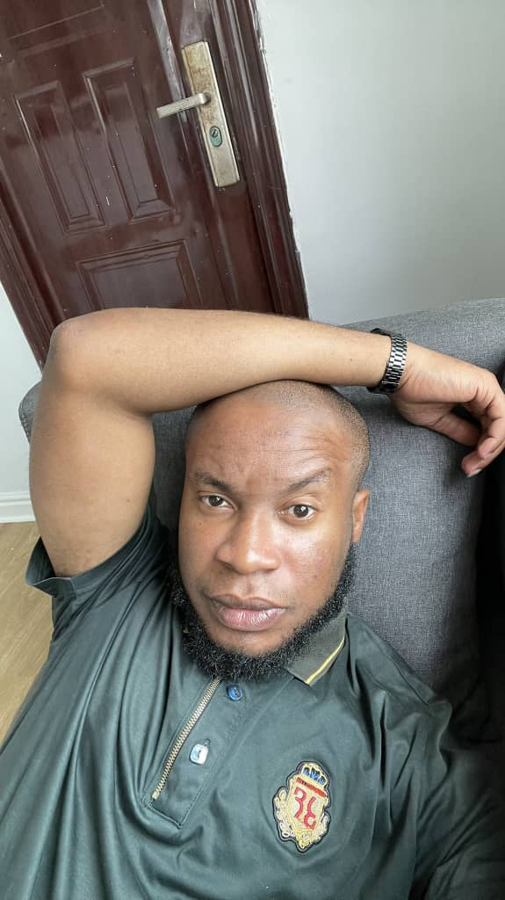

My Resume

Summary
I am a hardworking and resilient pereson, i make sure tasks are carried out efficiently, and make sure i give clients optimum satisfaction.
Education
- B.Sc Nutrition and Dietetics; Imo state university, owerri, Imo state 2014
Work Experience
- Clinical Dietitian -- KhairoDiet Clinic
December 2021- Till date
- Assessed patients needs
- Cuarated individual meal plans
- Wrote newsletters and health blogs
Skills
- Communication skills
- UI/UX skills